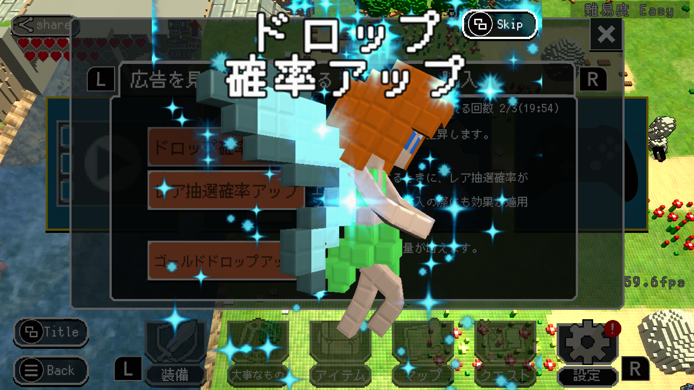

Games¶
妖精石物語¶

スーファミの ゼルダ や ディアブロ が大好きな方に遊んでもらいたいです。 やりごたえ満点な アクションＲＰＧ です。 重厚な ストーリー 、 謎解き 、そして トレジャーハンティング があり、飽きさせない展開があなたを待っています。
課金せずに最後まで遊べる！
課金せずにエンディングまで見ることができます。
広告 を見ると更に楽しくプレイできる恩恵を受けることができます。 恩恵にはいくつか種類があるので、自分のプレイスタイルに応じて恩恵を受けましょう。
ドロップ確率上昇
レアドロップ率上昇
ゴールドドロップ率上昇
数多くの個性的なモンスター達！
20種類を超える個性的なボスモンスターがあなたを待ち構えています。 ボスモンスターはそれぞれ異なる弱点となる部位を持ち、破壊も可能になっています。 尻尾を持つボスは尻尾切断も可能？！
装備の種類は無限に自動生成！

装備の種類は、武器、ヘルム、アーマー、シールドです。 武器は片手剣と大剣があり、それぞれ異なる戦略で敵と対峙する必要があります。 全ての装備は、無数にあるマジック効果との組み合わせにより自動生成され、二つとして同じ武器は現れないでしょう。
広大なフィールドマップ、そして危険な9つのダンジョン
広大なフィールドには、5つの村と9つのダンジョンがあります。 村では様々な人々との出会いがあり、情報収集、買い物、クエストを受託したりできます。 各ダンジョンは個性的に作られており、武器・防具を整えるだけでは足らず、アイテムを駆使したり、パズルを解かないと先に進めなくなっています。
3Dで描画されているがどこかレトロで懐かしい世界

全てがキューブで描かれる世界は一見、どこか懐かしいレトロな印象ですが、プレイしているとそのことを忘れてしまう位、滑らかにそして緻密に世界が描写されています。
妖精石を中心に展開される悲しくも壮大なストーリー

平和で美しい大地「ミドルアース」に、忍び寄る乱世の足音。 君はこの不穏の原因を突き止め、この地に平和を取り戻せるか？